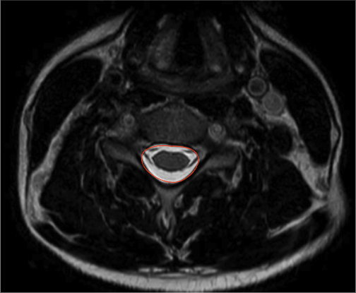

Adapted from: https://www.mriclinicalcasemap.philips.com/global/case/75/i
1) Description of Measurement
Cross-sectional canal area quantifies the total area of the cervical spinal canal on axial MRI, reflecting the true space available for the spinal cord at a given vertebral or disc level.
Unlike linear measurements (e.g., sagittal canal diameter), canal area accounts for both anteroposterior and transverse narrowing and incorporates soft-tissue contributors such as disc protrusion, ligamentum flavum hypertrophy, and ossification of the posterior longitudinal ligament (OPLL).
Reduced canal area correlates strongly with cervical spinal stenosis, myelopathy, and neurologic risk, making it one of the most physiologically meaningful MRI-based metrics of canal compromise.
2) Instructions to Measure
3) Normal vs. Pathologic Ranges
Key points:
4) Important References
Takao T, Morishita Y, Okada S, et al. Clinical relationship between cervical spinal canal stenosis and traumatic cervical spinal cord injury without major fracture or dislocation. Eur Spine J. 2013 Oct;22(10):2228-31. doi: 10.1007/s00586-013-2865-7. Epub 2013 Jun 23.
Fujiwara A, Lim TH, An HS, et al. The effect of disc degeneration and facet joint osteoarthritis on the segmental flexibility of the lumbar spine. Spine (Phila Pa 1976). 2000 Dec 1;25(23):3036-44. doi: 10.1097/00007632-200012010-00011.
Kato F, Yukawa Y, Suda K, et al. Normal morphology, age-related changes and abnormal findings of the cervical spine. Part II: Magnetic resonance imaging of over 1,200 asymptomatic subjects. Eur Spine J. 2012 Aug;21(8):1499-507. doi: 10.1007/s00586-012-2176-4.
Fehlings MG. Current Knowledge in Degenerative Cervical Myelopathy. Neurosurg Clin N Am. 2018 Jan;29(1):xiii-xiv. doi: 10.1016/j.nec.2017.09.021. Epub 2017 Oct 23.
5) Other info....
Cross-sectional canal area is best measured on MRI, not CT or X-ray
Particularly useful in:
Should be interpreted alongside:
Static area does not capture dynamic stenosis; consider flexion-extension X-rays when instability is suspected
Severe canal narrowing without cord signal change may still be symptomatic depending on chronicity and reserve capacity